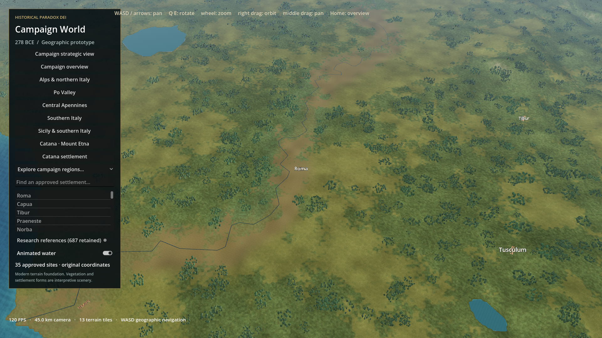

HISTORICAL PARADOX DEI • ROMA ONLY • 278 BCE INTERPRETATION
Roma temple and market precinct
Actual implementation and matched Godot screenshots. Artistic target remains unmet.This revised candidate is a hand-composed temple and market precinct, with connected routes, courtyard homes, workshops, native meshes and calibrated texture imports. It replaces the rejected 442-building grid. It does not establish parity with a 2026 commercial game; independent artistic review and further close-view finishing remain necessary.
Review and limitationsRome II / DEI researchAsset manifestLicenses and generated texture promptMeasurements and camera checksScene validation
Performance • RTX 3060 Laptop • 1920×1080
Numbers below are average FPS / 1% low. Automatic rendering disabled; one real GPU render forced per interval without buffer swap. This controls hidden-window rendering and differs from interactive presented-frame benchmarking. Shader caches retained.
| View | Before avg / low | Candidate avg / low | Candidate worst | Draw calls |
|---|
| close | 60.9 / 50.0 | 64.4 / 52.6 | 19.2 ms | 351 |
| regional | 96.3 / 72.3 | 109.6 / 81.8 | 12.7 ms | 323 |
| strategic | 120.0 / 110.6 | 120.0 / 109.2 | 9.3 ms | 274 |
| inspection | 65.9 / 52.7 | 74.5 / 57.5 | 18.2 ms | 274 |
Warm navigation before: 74.5 / 34.6 FPS. Candidate: 87.3 / 37.6 FPS. Raw summary and methodology. Earlier preview folders are diagnostic iterations, superseded by these rendered captures.
close • exact matched camera
regional • exact matched camera
strategic • exact matched camera
Before: previous Roma
Candidate: new Roma district inspection • exact matched camera
All images above are Godot viewport captures, with identical cameras and UI state in each pair. Only the supplementary inspection pair hides the UI, consistently on both sides. No generated city render is substituted for engine output.
Run locally: ./godot-prototype/roma-showcase.ps1. Add -Baseline to launch the previous Roma at the same preview camera. The regular campaign launch remains the previous art unless --roma-showcase is explicitly supplied.
Protected files, settlement coordinates and research are verified separately. No factions, ownership, construction economy, gameplay, The Rev edits, commits or pushes. Stop at this review package; no worldwide art deployment.